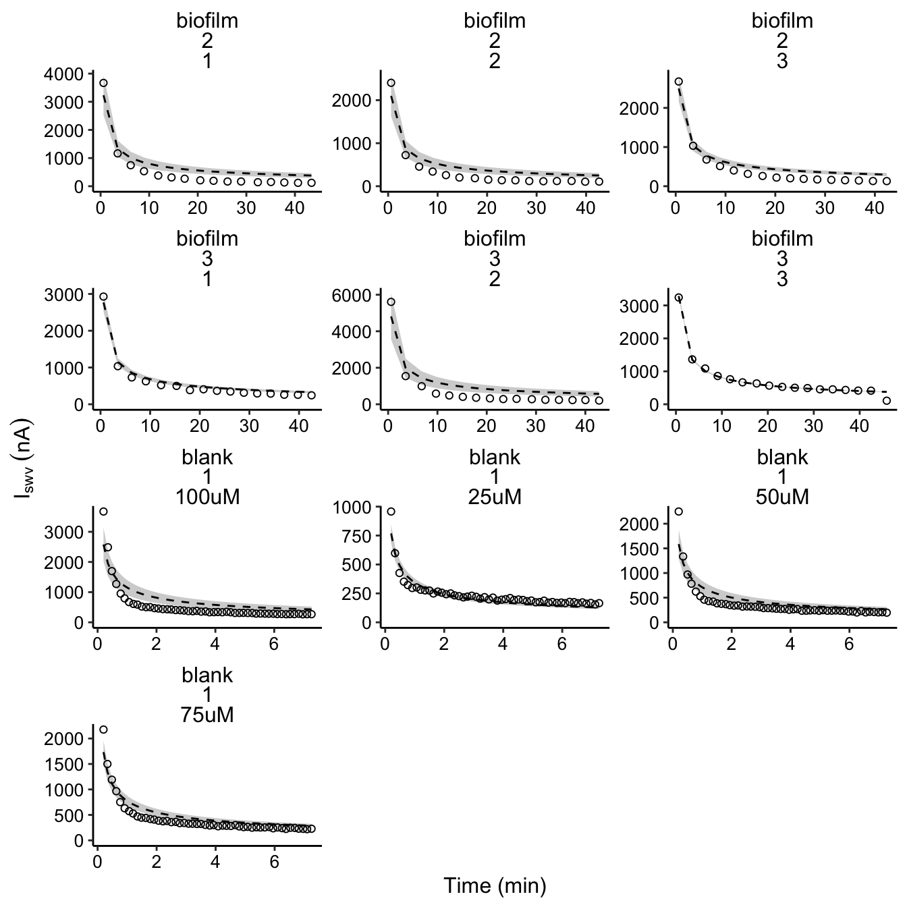
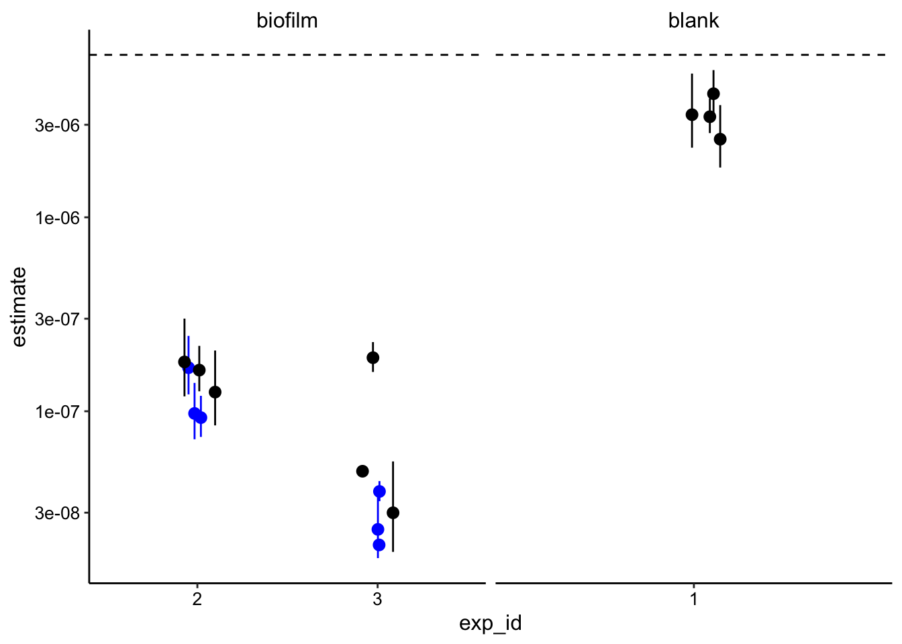

\(D_{phys}\) Analysis
03_19_19
library(tidyverse)
library(cowplot)
library(broom)
library(modelr)
library(viridis)
library(lubridate)
library(hms)
library(knitr)
library(kableExtra)
library(patchwork)
library(VGAM)
library(nls.multstart)
knitr::opts_chunk$set(tidy.opts=list(width.cutoff=60),tidy=TRUE, echo = TRUE, message=FALSE, warning=FALSE, fig.align="center")
source("../../../IDA/tools/echem_processing_tools.R")
source("../../../IDA/tools/plotting_tools.R")
theme_set(theme_1())This notebook describes how the estimates for \(D_{phys}\) are calculated.
Data preparation
All of the data to this point was processed from raw SWV data shown elsewhere. This means that there’s a lot of extra confusing data/columns we don’t need, and some things are not conveniently organized. First let’s deal with that, then we’ll get to the interesting stuff.
Biofilm data
First let’s read in the signals calculated from the SWV scans over time for the biofilms. We’ll also read in the estimates of \(D_{ap}\) that we already generated for these biofilms.
biofilm_signals <- read_csv("../../02_05_19_draft_2/data/01_28_19_aggregate_SWV_GC_signals.csv") %>%
filter(electrode_from_swv == "i1" & treatment == "control") %>%
filter(exp_id != "1") %>% filter(exp_id != "3" | run != 4)
biofilm_dap_estimates <- read_csv("../../02_05_19_draft_2/data/01_28_19_swv_gc_dap_estimates_aggregate_updated.csv") %>%
filter(treatment == "control" & exp_id %in% c("2", "3") &
echem_from_swv == "SWV") %>% select(exp_id, run, dap)Now we’ll normalize the timing of the scans within each run, so that transferring the biofilm to the fresh reactor occurs at approximately norm_time = 0.
biofilm_signals_norm <- biofilm_signals %>% group_by(exp_id,
reactor, run) %>% mutate(min_time = min(minutes_from_swv)) %>%
mutate(norm_time = minutes_from_swv - min_time + 0.6)Then let’s reorganize the data so that we have our estimates of \(I_0\) alongside the data. For these biofilms we are estimating \(I_0\) by bounding it between the soak SWV signal and the first transfer SWV signal. Here I’ll also add the \(D_{ap}\) estimates to the now organized dataset.
biofilm_soak_i0 <- biofilm_signals_norm %>% ungroup() %>% filter(reactor ==
"soak" & rep == 0) %>% mutate(i0_high = signal_from_swv) %>%
select(run, exp_id, i0_high)
biofilm_transfer_i0 <- biofilm_signals_norm %>% ungroup() %>%
filter(reactor == "transfer" & rep == 0) %>% mutate(i0_low = signal_from_swv) %>%
select(run, exp_id, i0_low)
biofilm_i0 <- left_join(biofilm_soak_i0, biofilm_transfer_i0,
by = c("exp_id", "run"))
biofilm_signals_i0 <- left_join(biofilm_signals_norm %>% ungroup() %>%
filter(reactor == "transfer") %>% mutate(signal = signal_from_swv) %>%
select(exp_id, run, rep, signal, norm_time), biofilm_i0,
by = c("exp_id", "run"))
biofilm_signals_dap <- left_join(biofilm_signals_i0, biofilm_dap_estimates,
by = c("exp_id", "run")) %>% mutate(IDA = "biofilm", run = as.character(run))
head(biofilm_signals_dap)## # A tibble: 6 x 9
## exp_id run rep signal norm_time i0_high i0_low dap IDA
## <chr> <chr> <dbl> <dbl> <dbl> <dbl> <dbl> <dbl> <chr>
## 1 2 1 0 3.67e-6 0.6 3.42e-6 3.67e-6 1.35e-5 biofi…
## 2 2 1 9 1.68e-7 26.1 3.42e-6 3.67e-6 1.35e-5 biofi…
## 3 2 1 10 1.67e-7 28.9 3.42e-6 3.67e-6 1.35e-5 biofi…
## 4 2 1 11 1.42e-7 32.4 3.42e-6 3.67e-6 1.35e-5 biofi…
## 5 2 1 12 1.49e-7 35.1 3.42e-6 3.67e-6 1.35e-5 biofi…
## 6 2 1 13 1.33e-7 37.8 3.42e-6 3.67e-6 1.35e-5 biofi…With that done let’s look at the data: The dotted lines are the high and low estimates of \(I_0\). We have two biofilms distinguished by exp_id and for each we have three replicate runs.
ggplot(biofilm_signals_dap, aes(x = norm_time, y = signal)) +
geom_point() + geom_line(aes(y = i0_high), linetype = 2) +
geom_line(aes(y = i0_low), linetype = 2, color = "red") +
facet_wrap(exp_id ~ run, scales = "free")
Blank data
Now we can read in the blank data, which was processed from SWV data in the same way as the biofilm data. Note that this blank dataset has a significant background, so we background subtracted the data. Residual peaks were manually quantified above the baseline (resids), so the signal remaining at the last scan beyond the resid peak was considered background and was subtracted out from all the used currents. Also, the \(D_{ap}\) measurement for the blank only has 1 replicate, so it’s value (6.8e-7 cm^2 / sec) was hard-coded in.
blank_signals <- read_csv("../../02_05_19_draft_2/data/11_28_18_swv_decays_Processed.csv") %>%
filter(PHZadded != "10uM")
resids <- tibble(PHZadded = c("100uM", "75uM", "50uM", "25uM"),
resid = c(2.648e-07, 2.199e-07, 1.958e-07, 1.548e-07))
blank_signals_bg <- left_join(blank_signals, resids, by = c("PHZadded")) %>%
group_by(PHZadded) %>% mutate(signal_bg = signal_from_transfer -
(min(signal_from_transfer) - resid)) %>% mutate(i0_bg = i0 -
(min(signal_from_transfer) - resid))
blank_signals_bg_org <- blank_signals_bg %>% ungroup() %>% mutate(run = PHZadded,
exp_id = "1", signal = signal_bg, i0_high = i0_bg, IDA = "blank") %>%
select(exp_id, run, rep, signal, norm_time, i0_high, IDA) %>%
mutate(dap = 6.8e-06)
head(blank_signals_bg_org)## # A tibble: 6 x 8
## exp_id run rep signal norm_time i0_high IDA dap
## <chr> <chr> <dbl> <dbl> <dbl> <dbl> <chr> <dbl>
## 1 1 100uM 1 0.00000367 0.2 0.0000115 blank 0.0000068
## 2 1 100uM 10 0.000000523 1.5 0.0000115 blank 0.0000068
## 3 1 100uM 11 0.000000502 1.65 0.0000115 blank 0.0000068
## 4 1 100uM 12 0.000000504 1.78 0.0000115 blank 0.0000068
## 5 1 100uM 13 0.000000470 1.93 0.0000115 blank 0.0000068
## 6 1 100uM 14 0.000000457 2.07 0.0000115 blank 0.0000068Now the blank data is in the same format as the biofilm data.
Combine data
Therefore we can now combine the datasets to make sure that we are fitting them in the same way.
decays_combined <- bind_rows(biofilm_signals_dap, blank_signals_bg_org)Let’s compare the blank data to the biofilm data.
ggplot(decays_combined, aes(x = norm_time, y = signal, color = IDA)) +
geom_point(shape = 21) This is one way to look at the data - it’s just smoothed. You can see that it take much longer for the biofilm data to decay to the point that the blank data does. Intuitively that should be attributable to different diffusion coefficients.
This is one way to look at the data - it’s just smoothed. You can see that it take much longer for the biofilm data to decay to the point that the blank data does. Intuitively that should be attributable to different diffusion coefficients.
Fitting data
Function for semi infinite diffusion
First, we need a function to calculate the signal over time (at x = 0) for a point source undergoing diffusion at a no-flux barrier (semi - infinite). This expression is derived elsewhere.
diffusion_point_semi <- function(t, i0, D_ap, t_s, D_phys) {
(i0 * sqrt(D_ap * t_s)/sqrt(4 * D_phys * t))
}So let’s fit this function with our parameters for the most important subsets of the data. We will consider the blank decays < 2 min and the biofilm decays < 20 min.
First the data will be grouped and fit by the nls_multstart function - this is a nonlinear least squares method. Then we will use those models to predict the signal over time from the model fit so that we can plot and compare.
decay_data_nls <- decays_combined %>% filter(IDA != "blank" |
norm_time < 2) %>% filter(IDA != "biofilm" | norm_time <
20) %>% group_by(IDA, exp_id, run) %>% do(tidy(nls_multstart(data = .,
formula = signal ~ diffusion_point_semi(t = norm_time, i0 = max(i0_high),
D_ap = max(dap), t_s = 0.02, D_phys = D_phys), start_lower = c(D_phys = 1e-08),
start_upper = c(D_phys = 1e-05), lower = c(D_phys = 0), supp_errors = "Y",
iter = 250, na.action = na.omit), conf.int = T))
decay_data_preds <- left_join(decays_combined, decay_data_nls,
by = c("IDA", "exp_id", "run")) %>% group_by(IDA, exp_id,
run) %>% mutate(preds = diffusion_point_semi(t = norm_time,
i0 = max(i0_high), D_ap = max(dap), t_s = 0.02, D_phys = estimate)) %>%
mutate(pred_high = diffusion_point_semi(t = norm_time, i0 = max(i0_high),
D_ap = max(dap), t_s = 0.02, D_phys = conf.high)) %>%
mutate(pred_low = diffusion_point_semi(t = norm_time, i0 = max(i0_high),
D_ap = max(dap), t_s = 0.02, D_phys = conf.low))
plot_dm_preds <- ggplot(decay_data_preds, aes(x = norm_time,
y = signal)) + geom_ribbon(aes(ymin = pred_low, ymax = pred_high),
fill = "light gray") + geom_line(aes(y = preds), linetype = 2,
color = "black") + geom_point(shape = 21) + facet_wrap(vars(IDA,
exp_id, run), scales = "free", ncol = 3)
plot_dm_preds_styled <- plot_dm_preds + scale_y_continuous(labels = nA_label,
limits = c(0, NA)) + labs(x = "Time (min)", y = expression(I[swv] ~
(nA)))
plot_dm_preds_styled
So, the fits are certainly not perfect, but they mostly capture the decay of the data. After trying out many different parameterizations and adding new terms, we concluded that it would be most appropriate to stick to the simplest model that explains most of the data.
Then to get the lower bound for the biofilm \(I_0\) we can fit the data again with the lower estimate - it will produce the same fits.
decay_data_nls_low <- decays_combined %>% filter(IDA == "biofilm") %>%
group_by(IDA, exp_id, run) %>% do(tidy(nls_multstart(data = .,
formula = signal ~ diffusion_point_semi(t = norm_time, i0 = max(i0_low),
D_ap = max(dap), t_s = 0.02, D_phys = D_phys), start_lower = c(D_phys = 1e-08),
start_upper = c(D_phys = 1e-05), lower = c(D_phys = 0), supp_errors = "Y",
iter = 250, na.action = na.omit), conf.int = T))Finally, we can plot the estimates of \(D_{phys}\) for the blank and the biofilms
ggplot(decay_data_nls, aes(x = exp_id, y = estimate)) + geom_hline(yintercept = 6.88e-06,
linetype = 2) + geom_pointrange(data = decay_data_nls_low,
aes(ymin = conf.low, ymax = conf.high), color = "blue", position = position_jitter(width = 0.1,
height = 0)) + geom_pointrange(aes(ymin = conf.low, ymax = conf.high),
position = position_jitter(width = 0.1, height = 0)) + facet_wrap(~IDA,
scales = "free_x") + scale_y_log10()
It is important to note that all these values were calculated with \(t_s = 20ms\), because it gave a realistic answer. This value is within the realm of possibility, but it is higher than we suggested previously.
Useful Figures
Comparing example biofilm and blank with models
# plot layout
plot_compare_decays <- ggplot(decay_data_preds %>% filter((IDA ==
"biofilm" & exp_id == 3 & run == "1") | (IDA == "blank" &
run == "75uM")), aes(x = norm_time, y = signal)) + geom_ribbon(aes(ymin = pred_low,
ymax = pred_high, group = IDA), fill = "light gray") + geom_line(aes(y = preds,
group = IDA), linetype = 2, color = "black") + geom_point(shape = 21)
# plot styling
plot_compare_decays_styled <- plot_compare_decays + scale_y_continuous(labels = nA_label,
limits = c(0, NA)) + labs(x = "Time (min)", y = expression(I[swv] ~
(nA)))
plot_compare_decays_styled Could improve this figure by generating model predictions for more points than exist in the dataset to generate smooth confidence intervals.
Could improve this figure by generating model predictions for more points than exist in the dataset to generate smooth confidence intervals.